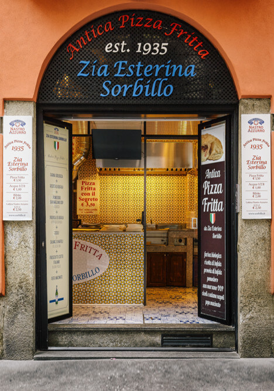
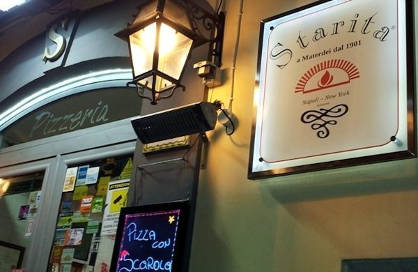

Antica Pizza Fritta da Zia Esterina Sorbillo
Antica Pizza Fritta da Zia Esterina Sorbillo è la Pizza Fritta, quella della antica tradizione Napoletana servita con la sua ricetta classica, innovata da un impasto leggerissimo di Farine di Agricoltura Biologica tipo 0 e Integrale, e nelle nuove ed esclusive varianti come: Il cappello di pulcinella (con polpettine di manzo fritte), con il tarallo napoletano (il tarallo classico napoletano con mandorle e pepe) con il pesto di Basilico Genovese DOP e quella tanto apprezzata con… Il Segreto.
Pizzeria Starita
La particolare cura per gli ingredienti, la dedizione al lavoro e la cortesia, fanno di "Starita a Materdei” una tappa fondamentale per gli amanti della vera pizza napoletana, non solo a Napoli, negli storici locali di Materdei, ma dal 2012 anche in America, a New York, dal 2016 a Milano, e dal 2018, anche a Torino, nella meravigliosa cornice del centro storico.